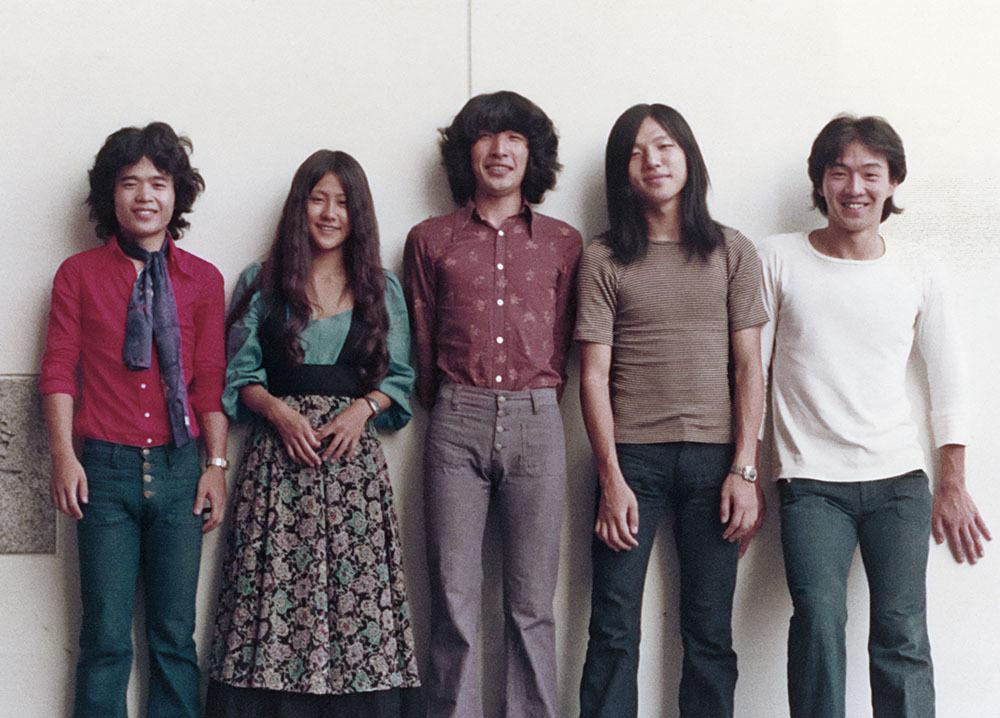

The Roots
1970s
City Pop did not appear as a fully formed genre in the 1980s. Its roots can be traced through the musical changes taking place in Japan during the 1970s. Japanese musicians were heavily influenced by Western styles, blending them with their own musical traditions to create a unique sound that would later be recognized as City Pop. An important part of this development was the growth of Japan's "New Music" scene in the 70's. Rather than simply reproducing American or European stylizing of music, Japanese artists began combining these outside influences with their own songwriting traditions. Sugar Babe, formed by Taeko Ohnuki and Tatsuro Yamashita, is often discussed as an early example of this transition. Their 1975 album "Songs" incorporated American pop and soul influences while maintaining a distinctly Japanese songwriting identity. The term "City Pop" was still taking shape during this period. By the late 1970s, Japanese record companies and music publications were beginning to use terms such as "city pops" to describe music with a sophisticated, modern, and urban atmosphere. At this point, the boundaries were loose, and the music had not yet become the clearly recognizable style that would emerge during the following decade.